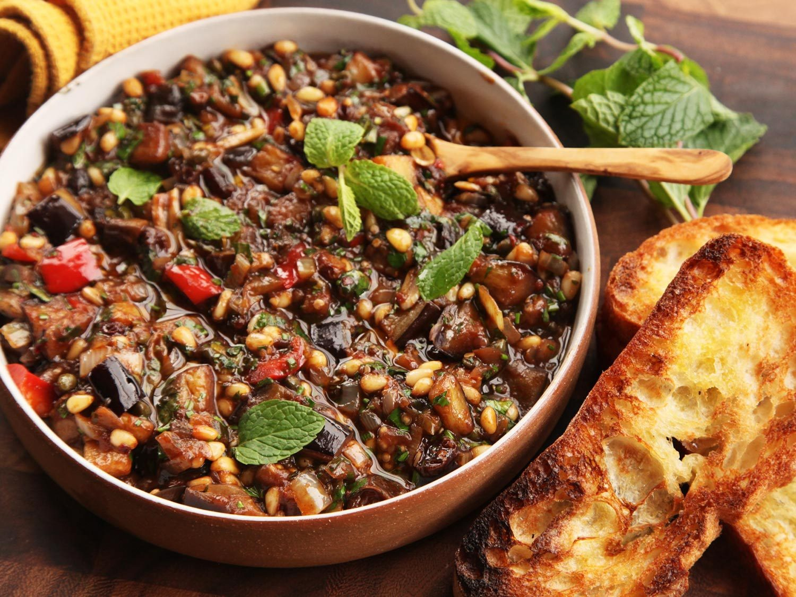

CAPONATA
Western Dish (Italy)

Takes 1 hour
Makes 8 servings
MAIN DISH
Ingredients
- 1 ½ pounds eggplant (1 large), roasted
- 2 tablespoons olive oil
- 1 medium onion, chopped
- 2 stalks celery, from the inner, tender stalks (the heart), diced
- 3 large garlic cloves, minced
- 2 red bell peppers, diced
- 1 pound ripe tomatoes, preferably romas, peeled, seeded and finely chopped, or 1 14-ounce can crushed tomatoes (in puree)
- 3 heaped tablespoons capers, rinsed and drained
- 3 tablespoons coarsely chopped pitted green olives
- 2 tablespoons plus a pinch of sugar
- 3 tablespoons red or white wine vinegar or sherry vinegar
Instruction
- 1. Roast the eggplant, allow to cool and chop coarsely.
- 2. Heat 1 tablespoon of the oil over medium heat in a large, heavy nonstick skillet and add the onion and celery. Cook, stirring, until the onion softens, about 5 minutes, and add the garlic. Cook together for a minute, until the garlic begins to smell fragrant, and add the peppers and 1/2 teaspoon of salt. Cook, stirring, until just about tender, about 8 minutes. Add another tablespoon of oil and the eggplant, and stir together for another 5 minutes, until the vegetables are tender. The eggplant will fall apart, which is fine. Season to taste.
- 3. Add the tomatoes to the pan with about 1/2 teaspoon salt and a pinch of sugar. Cook, stirring and scraping the bottom of the pan often, for 5 to 10 minutes, until the tomatoes have cooked down somewhat and they smell fragrant. Add the capers, olives, remaining sugar, and vinegar. Turn the heat to medium-low and cook, stirring often, for 20 to 30 minutes, until the vegetables are thoroughly tender and the mixture is quite thick, sweet, and fragrant. Season to taste with salt and pepper and remove from the heat. Allow to cool to room temperature. If possible, cover and chill overnight. Serve at room temperature.
SOURCE : cooking.nytimes.com
Add to Cart
want to try this recipe? order ingredients now!